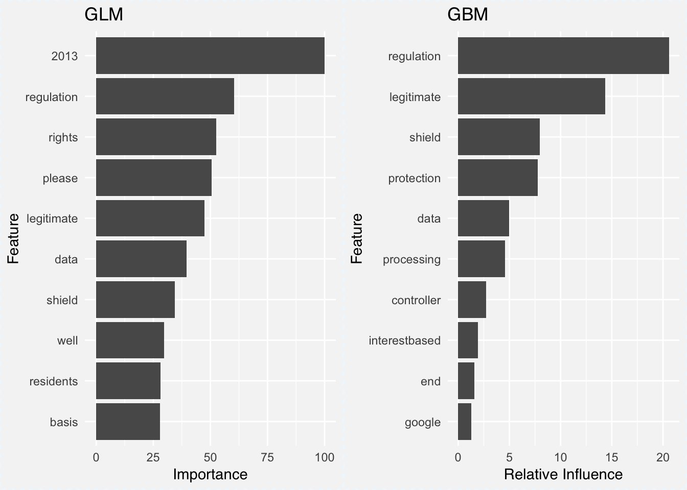
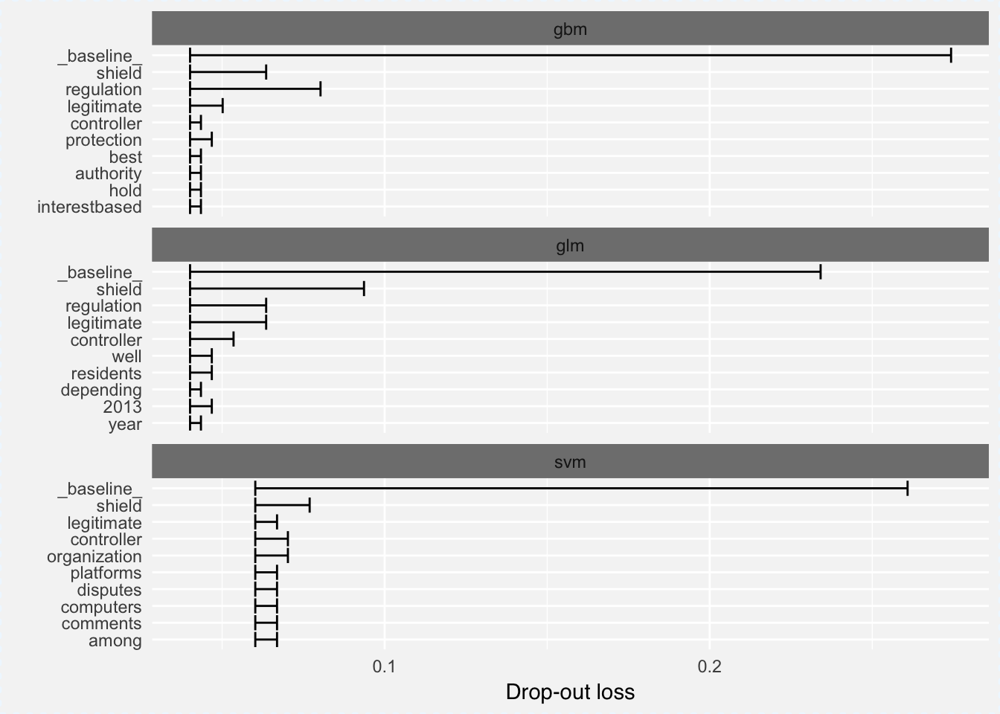
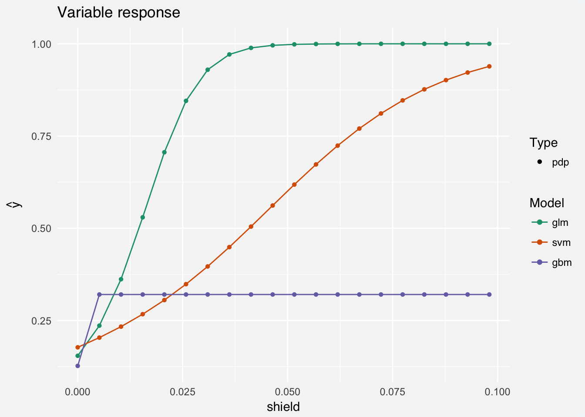

Tamas Szilagyi


Whether internet companies are now compliant with GDPR is hard to say, but they sure left updating their privacy policies to the last minute. What happened in the last days of May was the greatest corporate email tsunami since Y2K. I hardly read the updated policies, or remember what the old ones looked like. Wouldn’t it be great if we could model where GDPR inspired policies are different from the old ones instead of reading them?
Looking for data, I came upon the Usable Privacy Project, that has a few datasets available consisting of privacy policies. I downloaded the ACL/COLING 2014 Dataset 1, which contains roughly 1000 documents in .xml files. Collected pre GDPR, this is a great starting point. But I still need a respectable amount of policies inspired by recent European regulation.
The researchers behind the Usable Privacy Project paid mechanical turks to collect policies; I opted for the second best thing: asynchronous web scraping. There is a very promising package on GitHub called async for asynchronous HTTP requests in R. The advantage of asynchronous over synchronous code for network operations is that in case of a response delay, an asynchronous client will issue another request instead of staying idle. Because time is not being wasted on waiting for responses, asynchronous HTTP requests are orders of magnitude faster than their sequential cousins.
Extending the example from the package’s README.md with some help from rvest, we can easily create an asynchronous scraping function:
library(async)
library(rvest)
http_content <- function(url) {
def <- http_get(url)$
then(function(response) {
if(response$status_code == 200) {
rawToChar(response$content) %>%
read_xml(as_html = TRUE) %>%
html_nodes("p") %>%
html_text()
}
}
)$
catch(error = function(...) setNames("error", url))
}We are essentially creating a deferred value def which is only operated on - what follows after then(function(response) - when this value becomes known.
Now, I need possible url’s of online privacy policies to plug in, and I need a lot of them. I went ahead and retrieved the most popular sites from the US, Canada, UK, South Africa and Australia using the Alexa Topsites API. All you need is an AWS account and the service is free up to top 500 sites per country. To figure out what suffix I need for the url’s, I looked at a few online privacy policy online and concluded that most of them would have the same pattern. I generated all combinations of the url’s and suffixes and plugged the result into async’s native asynchronous iterator async_map() along with the async scraping function. Finally wrapping the script with synchronise() that
… creates an event loop, which manages the computation of the deferred values in this particular async phase.
# create all possible combinations of urls & suffixes
suffix <- c("/privacy_policy","/privacy-policy","/privacy")
all_urls <- as.vector(outer(urls, suffix, paste, sep=""))
# call async iterator and initate event loop
usable_policies_list <- synchronise(
async_map(
all_urls,
http_content)
)On about 4.500 url’s this completes in less than 10 minutes. I wanted to benchmark the performance on the same data with lapply() and regular get requests, but I ran out of patience after running it overnight to no end.
After all the scraping, cleaning and parsing, I ended up with a final dataset containing 1196 policies and an indicator whether it mentions “GDPR” or not. I took the conservative approach of classifying the scraped policies as GDPR compliant only if the document contains the term, giving me 188 policies. It’s not a whole lot - because most url’s were either invalid or guarded against scraping; but hopefully just enough to get us going.
I am going to skip exploratory data analysis altogether and jump straight into modeling the difference between policies. If you want to see an example of the former, I encourage you to check out my previous post on Rick and Morty.
With an imbalanced class distribution,
table(data$is_gdpr)##
## nee ja
## 1008 188and the average policy about 15.000 characters long,
summary(nchar(data$policy))## Min. 1st Qu. Median Mean 3rd Qu. Max.
## 0 7936 14114 15944 20194 141715this is going to be an interesting task.
First we have to convert policy texts to numbers. A common approach is constructing a document-term matrix where each row is a document and each word is a column. The cells in the matrix contain a statistic about each word in their respective document, such as tf-idf score. It is a simple and powerful way to identify important words in each document. We simply count the number of words per policy and use the number of times it appears in other policies as a weighing factor.
The dimensions of the resulting document-term matrix depend on how many words we include in our vocabulary. Either way, the number of variables will quickly run up to thousands depending on our vocabulary size and because most words only appear in a subset of documents, the result will be a sparse matrix. Before anything, let’s split the dataset for modeling.
set.seed(321)
# sample row indices for split
smp_size <- floor(0.75 * nrow(data))
train_ind <- sample(seq_len(nrow(data)), size = smp_size)
# create train and test sets
train <- data[train_ind,]
test <- data[-train_ind,]To tokenize our text and apply the tf-idf transformations I’ll use the text2vec package. We calculate the tf-idf scores based on the train set, and only map the same values onto the validation set to prevent leakage.
library(text2vec)
library(magrittr)
# exclude stopwords & anything referring to EU
stopwords_gdpr = c(stopwords::stopwords("en"),
"gdpr","eu", "eea",
"european", "europe")
# iterators for word level tokenization
it_train <- itoken(train$policy, preprocessor = tolower,
tokenizer = word_tokenizer, progressbar = FALSE)
it_test <- itoken(test$policy, preprocessor = tolower,
tokenizer = word_tokenizer, progressbar = FALSE)
# create vectorizer function based on iterator and vocab size
vectorizer <- create_vocabulary(it_train, stopwords = stopwords_gdpr) %>%
prune_vocabulary(doc_count_min = 10, vocab_term_max = 1000) %>%
vocab_vectorizer()
train_dtm <- create_dtm(it_train, vectorizer)
# tf-idf transformation
tfidf = TfIdf$new()
dtm_train_tfidf = fit_transform(train_dtm, tfidf) # tfidf modified in place!
test_dtm <- create_dtm(it_test, vectorizer)
dtm_test_tfidf = transform(test_dtm, tfidf)Now I’ll train three different models: Regularized logistic regression (glm), support vector machines (svm) and a gradient boosted machines (gbm). The first two are simple linear models remarkably apt at dealing with wide data - remember we have a 1,000 variables; while gbm is a tree-based method considered to be the top of the hill for classifiers. I won’t discuss the internals of these algorithms, and I will only explicitly tune the L1 regularization parameter for the glm (it performs both variable selection as well as coefficient shrinkage, thereby reducing model variance). Hopefully we get respectable performance at first attempt and can jump straight into some explainable machine learning stuffs.
library(caret)
y_train <- factor(train$is_gdpr, levels = c("ja","nee"))
y_test <- factor(test$is_gdpr, levels = c("ja","nee"))
x_train <- as.data.frame(as.matrix(dtm_train_tfidf))
x_test <- as.data.frame(as.matrix(dtm_test_tfidf))
# boosted trees, glm, svm
# Using caret to perform CV
set.seed(123)
ctrl <- trainControl(method="cv", number=3,classProbs=TRUE)
glm_fit <- train(x = x_train, y = y_train,
method="glmnet", trControl = ctrl,
tuneGrid = expand.grid(alpha = 1,lambda = seq(0.001,0.1,by = 0.001)))
svm_fit <- train(x = x_train, y = y_train,
method="svmLinear", trControl = ctrl)
gbm_fit <- train(x = x_train, y = y_train,
method="gbm", trControl = ctrl)Generating predictions for the validation set, the confusion matrices look as follow.


Gbm has the highest accuracy by a inch with around 96%, while svm slightly outperforms the rest with 82% for sensitivity, meaning that 82% of GDPR policies are classified correctly. We are of course most interested what words are differentiating the two classes of policies. We can retrieve measures for variable importance for both the glm as well the gbm models out of the box. For glm we can use varImp(glm_fit) that returns an importance percentage for each variable that’s based on the size of the models coefficients. For gbm we can access the relative influence of each variable using summary(gbm_fit). Relative influence depicts the average empirical improvement of splitting by a variable across all trees generated.

In both cases the word regulation comes out as most important word (I wonder if it has anything to do with GDPRegulation). Other than that, the words data, shield and legitimate appear in both plots for the two models. The problem is of course that we are looking at two different measures for two different models. It would be better to compare the models using the same tools on the same scale using the same metrics.
Article 22 of GDPR states user’s rights to receive information why automated decisions were made and underlying data processing. Thanks to GDPR, there is a growing interest in developing methods and tools to investigate how predictions are generated by black box models. Enter the world of explainable machine learning frameworks.
One of the newer packages in the field is DALEX, which I learned about at eRum 2018. It has a set of model agnostic tools to investigate what our model is doing. For calculating variable importance:
“… we simply subtract the loss function calculated for validation dataset with permuted values for a single variable from the loss function calculated for validation dataset. This concept and some extensions are described in (Fisher, Rudin, and Dominici 2018).”
Basically we look at how our loss function changes with the permutation of the values in each column. For this we define a prediction and loss function, create an explainer object using explain(), plug into variable_importance() and plot the results.
library(DALEX)
# predict classes
p_fun <- function(object, newdata){
predict(object, newdata=newdata, type="raw")
}
# accuracy loss, aka error-rate
accuracy_loss <- function(observed, predicted) {
Metrics::ce(observed, predicted)
}
# explainer object 1
explainer_glm <- explain(glm_fit, label = "glm", data = x_test,
y = y_test, predict_function = p_fun)
# explainer object 2
explainer_svm <- explain(svm_fit, label = "svm", data = x_test,
y = y_test, predict_function = p_fun)
# explainer object 3
explainer_gbm <- explain(gbm_fit, label = "gbm", data = x_test,
y = y_test, predict_function = p_fun)
set.seed(321)
vi_glm <- variable_importance(explainer_glm, loss_function = accuracy_loss, n_sample = -1)
vi_gbm <- variable_importance(explainer_gbm, loss_function = accuracy_loss, n_sample = -1)
vi_svm <- variable_importance(explainer_svm, loss_function = accuracy_loss, n_sample = -1)
plot(vi_glm, vi_svm, vi_gbm)
I used error rate (1-accuracy) as the loss function, hence the interpretation of the model is as follows:
Looking at the above plot, it confirms that gbm has the lowest overall error rate and there are words shared among the three plots such as shield, controller or regulation that appear in all three plots.
Knowing which variables are important is only the half the story; we would also like to investigate the nature of relationship between the predictor and the prediction. DALEX implements Partial Dependence Plots2 that show how different values of a numeric variable affect the prediction in isolation. We only need to change our prediction function to return probabilities,
p_fun <- function(object, newdata){
predict(object, newdata=newdata, type="prob")[,1]
}then rerun our explain() function calls from above, and plug the result into variable_response():
pdp_glm <- variable_response(explainer_glm, variable = "shield", type = "pdp")
pdp_svm <- variable_response(explainer_svm, variable = "shield", type = "pdp")
pdp_gbm <- variable_response(explainer_gbm, variable = "shield", type = "pdp")
plot(pdp_glm, pdp_svm, pdp_gbm)
For example, at around a tf-idf score of 0.04 for the word shield, the glm will always predict a GDPR policy. For SVM the cure is lower and the gbm flatlines at a tf-idf score 0.005. One explanation is that our glm model is a lot smaller (thanks to L1 regularization) and so assigns greater weight to important variables. Looking at a couple more words, a similar pattern emerges:

Note that for the words regulation and legitimate, lower tf-idf scores are sufficient for higher probability of being classified as a GDPR policy.
It only took fitting some models and creating a few plots and I already feel a lot safer under GDPR. After all, this policy is aimed at protecting your data against the sort of abuse we have been hearing about in the news of late. Not only that, but the coming of GDPR and the need for explainable machine learning has also been a boon for a fast growing collection of model interpretability tools such as lime, ShapleyR, live, xgboostExplainer, breakDown.
While text classification is perhaps an atypical usecase for DALEX, it works just as well and is suprisingly fast even with our large document-term matrix. However, I am curious to see how an actual case of someone asking for model clarification would look like under GDPR and what explanations would suffice to satisfy. Either way, the R community seems to be prepared for now.
Corpus of 1,010 privacy policies from the top websites ranked on Alexa.com, created as part of: F. Liu, R. Ramanath, N. Sadeh, N.A. Smith. A Step Towards Usable Privacy Policy: Automatic Alignment of Privacy Statements. Proceedings of the 25th International Conference on Computational Linguistics (COLING). 2014.↩
Greenwell, Brandon M. 2017. “Pdp: An R Package for Constructing Partial Dependence Plots.” The R Journal 9 (1):421–36. https://journal.r-project.org/archive/2017/RJ-2017-016/index.html.)) for a black box↩